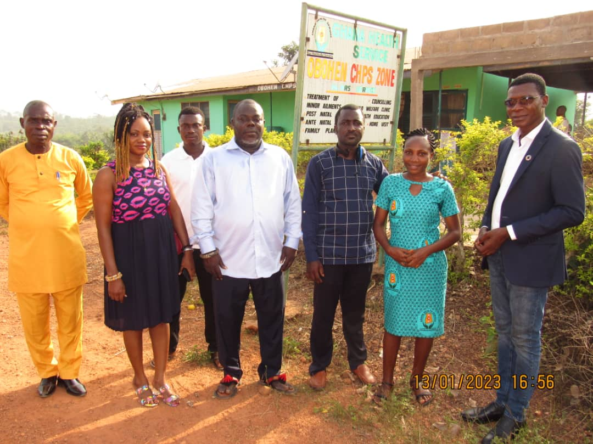
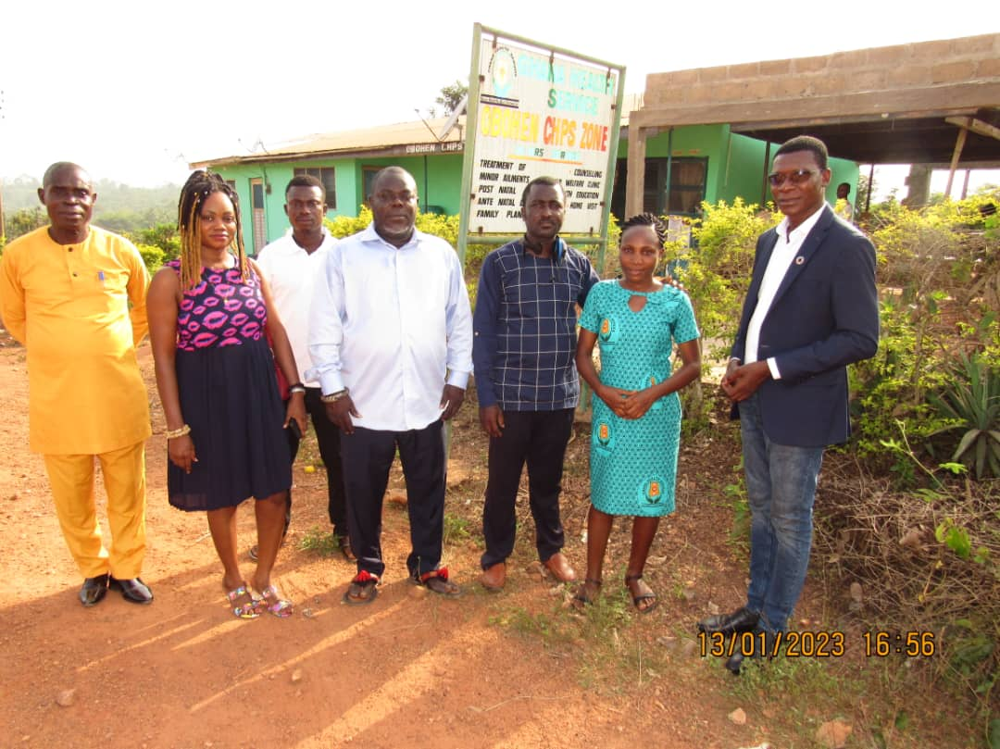
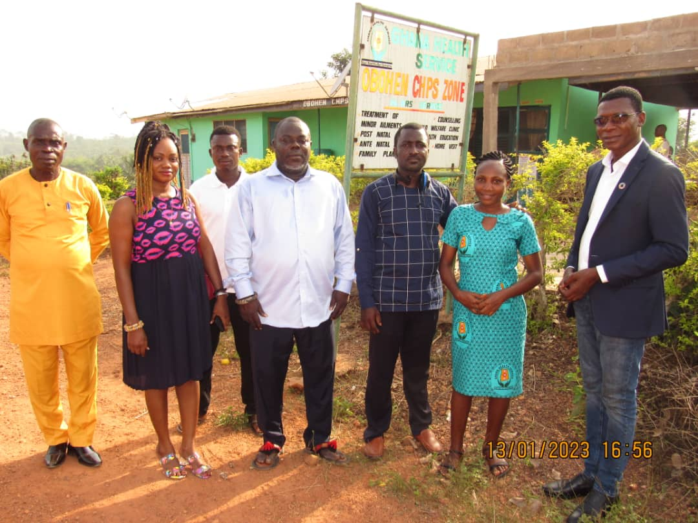
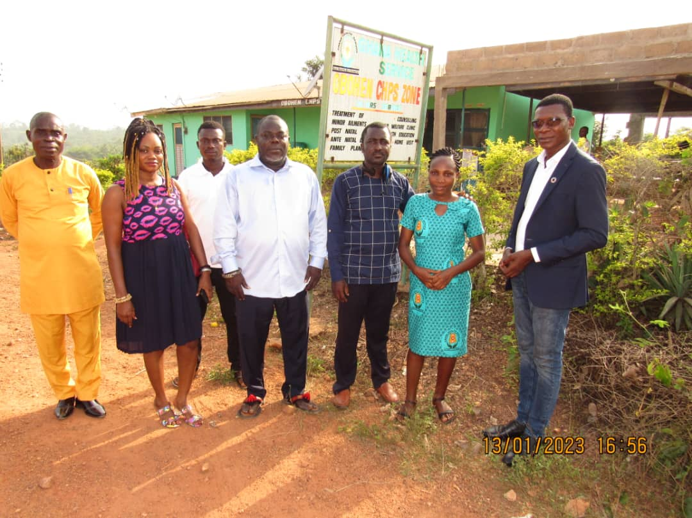

Address:
Post Office Box 72
Abora Obohen via Abura Dunkwa
Tel: +447865023862
Digital Address (GPS): CA-03344-1265
Address:
Post Office Box 72
Abora Obohen via Abura Dunkwa
Tel: +447865023862
Digital Address (GPS): CA-03344-1265
Ghana’s economy performed well to global acclaim in the last decade or so
but like many economies of the developing world, Ghana’s economic fortunes
appear to have faulted considerably, buffeted by global events of the Covid-19
pandemic and the Russia-Ukraine war pushing Ghana into IMF intervention
towards the end of 2022 for economic stabilisation.
The harsh realities
inevitably affect development programmes in Ghana and disproportionately
impact on living standards particularly that of rural communities where
economic activity is usually low or non-existent.
Abora Obohen, a small town in the Abora, Asebu and Kwamankese District of
the Central Region of Ghana, is a rural community of peasant farmers. It has
a resident population of about 2,000 inhabitants but with many more having
deserted the community in search of work and better life elsewhere due to
lack of opportunities locally.
There are two or three small petty shops.
Smallholder peasant farming forms an almost dire economic backbone of the
community. Despite its poor state of infrastructure and economic well-being,
the community is vibrant, thrives on tradition and religion having about six
chiefs and eight or nine different churches which lead spiritual advancement to
salvation even in economic and social malaise.
So the drift of the youth to
cities after completing their basic education at the community schools is
unavoidable in the circumstances.
The community suffers from lack of good
basic infrastructure, there is poor housing, the roads are dangerous to drive
on and the community schools are ill-equipped. There is a community clinic
which also serves neighbouring towns and villages but facilities are poor and
substandard. The structure of the clinic building itself is crumbling down due
to bad construction and lack of maintenance.
Bore-hole water pumping
stations which provide clean drinking water have broken down due to lack of
maintenance forcing the community to use local ponds as source of water
risking a return to water-borne diseases which blighted, maimed and even
killed many people in the community in years gone past.
Erosion is eating up
the beautiful natural landscape of the community due to poor drainage so
rainfall which the community’s farming population relies on in absence of
proper irrigation system, has now become a death trap as torrential rain pulls
down mud-built houses and makes families homeless.
These dire conditions make life difficult and with the current harsh economic
realities of Ghana, any hope of a government intervention to make things
better is far-fetched. Despite all the gloom, there are great attributes of
community spirit, willingness to engage and working together to improve
things for themselves if money for materials is made available.
For decades,
the community has devoted each Wednesday for communal work to clean up
the streets and around.
The youth work each Wednesday freely and
enthusiastically. This is the spirit the founders of OBOCOTRUST and other
leaders in the community have tapped into and channelled it in starting a self
help project of building a Day Nursery to provide for early learning for our
children.
The Day Nursery project is now at an advanced stage with the
roofing having been done. This gives the community hope that collectively we
can improve life outcomes if we think well and work together with
determination. So far, funding for the Day Nursery project has been through
self-fundraising voluntary donations from the community, but with low income
levels, the project is taking far too long to complete. We need financial
support to do more to make things better in the community.
We have a good
story but need support.
These are the imperatives which led to OBOCOTRUST NGO being set up as
a voluntary non-profit and non-governmental organisation and a vehicle
through which we can develop community cohesion and also source national
and international charitable grants, philanthropist and voluntary donations
from benefactors to help improve the community and its neighbouring areas.
OBOCOTRUST will lead the drive for change, provide impetus for
developments in the community which we hope will spread to its neighbouring
towns, villages and within the District for the general good of society.
Financial support, expertise engagement and advice and volunteer
participation are what we pray for to make good things happen. God help us.
...Read more
EGYA OBO
CEO - OBOCOTRUST
 





This year you can
put a smile on the
face of a family

Wellness is a necessary commodity for all humans. In view of this, the community is putting up a structure to accomodate all health issues. Relying on the government is a risk they do not want to take when the life of a human is at stake.

Due to bad education, condidtions will in future affect the youth of the community, the leaders of this community found it necessary to adopt a self-help system thus by es tablishing a nursery block for the children in other to educate their youth for a better fututre.

Many have suffered from natural disater as heavy rain taking down their mud houses. At heart, the leaders of this foundation mobilize to assist people who suffer such tragedy.
Many have suffered from natural disater as heavy rain taking down their mud houses. At heart, the leaders of this foundation mobilize to assist people who suffer such tragedy.
Many have suffered from natural disater as heavy rain taking down their mud houses. At heart, the leaders of this foundation mobilize to assist people who suffer such tragedy.
Many have suffered from natural disater as heavy rain taking down their mud houses. At heart, the leaders of this foundation mobilize to assist people who suffer such tragedy.